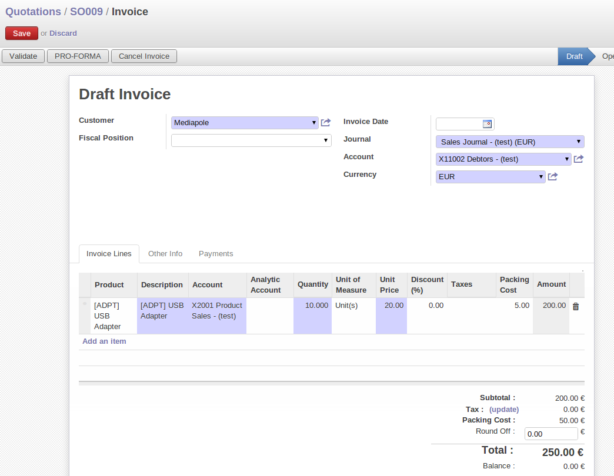

<section class="oe_container">
    <div class="oe_row oe_spaced">
        <div class="oe_span12">
            <h2 class="oe_slogan">Packing Cost Transfer to Invoice</h2>
            <h3 class="oe_slogan">Transfer packing cost to Invoice from Warehouse</h3>
        </div>
        <div class="oe_span6">
            <div class="oe_demo oe_picture oe_screenshot">
                <a href="http://www.youtube.com/embed/Z08HEe-5O54" target="new">
                    
                </a>
                <div class="oe_demo_footer oe_centeralign">Click to watch Video</div>
            </div>
        </div>
        <div class="oe_span6">
            <p class="oe_mt32">
With the use of this module the packing cost will be transferred from Sales order to Invoice via warehouse.
            </p>
            <p class="oe_mt32">
If you want to sell goods to be delivered in a container (package), You can add extra packaging cost directly then it will calculate container product's sale price as packaging price and calculate final price on the sales order.
            </p>
            <p class="oe_mt32">
When the invoice is created for the sales order, the amount is getting transferred to the invoice.
            </p>
            <div class="oe_centeralign oe_websiteonly">
                <a href="mailto:sales@openerp.com" class="oe_button oe_big oe_tacky">Contact Us</a>
            </div>
        </div>
    </div>
</section>
